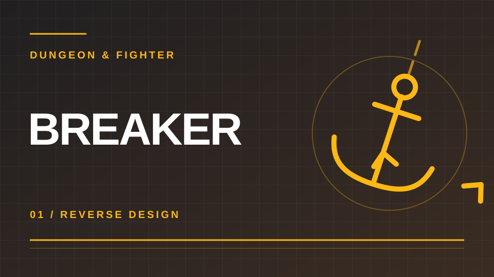

타이드 바운드 · 표적과 거리
훅이 걸린 적과의 거리에 따라 접근하거나 제자리에서 타격하는 동작을 비교했습니다. 어디로 이동할지 시전 전에 읽을 수 있는지가 분석 포인트입니다.
함선을 격파하는 앵커가 플레이어의 진입, 스킬 연계, 타격감으로 어떻게 이어지는지 살펴봤습니다.

브레이커가 활동한 격류지대와 함선 격파 전술을 출발점으로, 세계관과 외형에서 강조한 요소가 무기와 스킬 동작에 어떻게 드러나는지 분석했습니다.
날은 베기와 내려찍기의 충격을 보여주고, 사슬은 브레이커와 표적 사이의 거리를 전투에 활용하게 합니다. 같은 무기가 근거리 타격과 원거리 진입을 모두 설명하는지가 분석의 기준입니다.
훅이 걸린 적과의 거리에 따라 접근하거나 제자리에서 타격하는 동작을 비교했습니다. 어디로 이동할지 시전 전에 읽을 수 있는지가 분석 포인트입니다.
큰 공격 동작과 충격파의 타격감을 살리면서, 전직 스킬의 후딜레이 캔슬이 연계 흐름을 어떻게 이어주는지 살펴봤습니다.
물건이 떨어지는 위치와 낙하 후 공격할 수 있는 시점을 나눠, 물건 배치와 후속 타격이 전투에서 어떤 역할을 하는지 분석했습니다.
무기를 외형으로만 구분하는 대신, 어디로 진입하고 무엇을 맞히며 다음 행동으로 어떻게 이어가는지까지 설계해야 전직의 개성이 플레이에서도 느껴집니다.